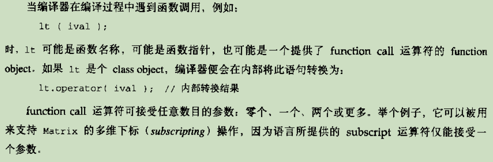

About Callble Object
可调用对象类型包括: 函数、函数指针、lambda表达式、bind创建的对象以及重载了函数调用运算符的类(function object)。
std::function: 为了存储一系列有相同调用形式的可调用对象， C++11 提供了function模板类，
创建function类型对象时，指定调用形式，例如
function<int (int, int)> f=add; //add是一个函数指针
function<int (int, int)> f2=divide(); //一个 function object
function<int (int, int)> f3= [](int i, int j) {return i*j;} //lambda表达式
function object
提供了 function call 运算符的class, 
lambda
C++ 11 introduces lambdas, allowing the definition of inline functionality, which can be
used as a parameter or a local object.
可调用对象, 其形式为：[捕获列表]（参数列表）mutableopt throwSpecopt -> 返回类型 {函数体}:
捕获列表:lambda的函数体中只能使用那些在捕获列表中出现的变量或者所在函数中的静态变量或者在所在函数之外声明的全局变量。
可变lambda，在参数列表后加上mutable关键字，表明可以在函数体中改变捕获变量的值；因此此时参数列表不能省略； throwSpec则是异常抛出表达式。
实际中可以忽略"(参数列表)"以及"-> 返回类型"，但必须包含捕获列表（可以为空）和函数体。但当mutable或throwSpec、返回类型存在时，则不能省略"()"。
//the minimal lambda function
[]{
//do something
}
lambda的参数列表不能有默认参数。参数是在lambda调用时拷贝，而捕获列表中的变量则是在创建时拷贝的。
定义一个lambda本质是生成一个与lambda对应的新的（匿名的）类类型(但其并没有可被调用的构造函数和assignment operator),因此传递一个lambda实际上是传递一个类对象，故使用auto定义一个用lambda初始化的变量时，便定义了一个从lambda生成的类型的对象。
隐式捕获：在捕获列表中使用“=”、“&”分别表示值捕获和引用捕获;
也可以混合使用隐式捕获和显式捕获，[=， &variable]，表示除variable采用引用捕获，其余变量采用值捕获;
对于采用值捕获的变量，每个定义的lambda内将存在一个单独版本，以定义时捕获的变量值进行初始化，此后每次调用该lambda object，在此初始值基础上改变，不会改变原有变量。
int id=0;
auto f=[id]()mutable{
cout<<"in lambda:"<<id<<endl;
id++;
};
id = 22;
f(); // in lambda:0
f(); // in lambda:1
f(); // in lambda:2
cout<<"in main:"<<id<<endl; // in main:22
指定lambda返回类型：如果lambda的函数体包含除return以外的其他语句，则编译器假定该lambda返回void，即不能返回值，此时只能通过尾置返回类型“-> type”指定lambda的返回类型。
bind1st与bind2nd
两者是将二元函数转换为一元函数，即对与某些函数，其包含两个参数，通过bind1st可以绑定第一个参数值，通过bind2nd可以绑定第二个参数值，则该函数此时即可视为一元函数，可以被用作其他需要一元函数作为参数的函数的参数。
eg.
#include <iostream>
#include <vector>
#include <algorithm>
#include <functional>
using namespace std;
int main()
{
vector<int> vec ;
vec.push_back(40);vec.push_back(50);
vec.push_back(60);vec.push_back(70);
vec.push_back(80);vec.push_back(90);
//统计及格个数
binder1st<less_equal<int>> binder1 = bind1st(less_equal<int>(),60);
//==>binder1st(less,60);
int nPassCnt = count_if(vec.begin(), vec.end(), binder1 );
//==>less_equal(60,x)==> 60 <= x
//统计不及格个数
binder2nd<less<int> > binder2 = bind2nd(less<int>(), 60);
//==>binder2nd(less,60);
int nFailCnt = count_if(vec.begin(), vec.end(), binder2 );
//==>less(x,60);==> x < 60
cout << "nPassCnt:" << nPassCnt << endl;
cout << "nFailCnt:" << nFailCnt << endl;
return 0;
}
新版版已经弃用上述两个函数，改用bind。
auto newCallable = bind(callable， arg_list)
auto nf = bind(f, a, b, c, _1, _2);
/*表示把nf的第一个参数传递给f的第4个参数，第二个参数传递给f的第5个参数，f的前三个参数分别绑定了a、b、c.*/
_n即占位符，定义在placeholder命名空间里（placeholder也定义在std命名空间中），其和bind函数都定义在functional头文件中。
使用占位符前，需要对应的声明， using namespace std::placeholders;
对于非占位符的参数是被拷贝到bind返回的可调用对象中的，因此那些无法拷贝或者需要引用传递的参数，可以通过标准库的ref函数，其返回一个对象，包含给定的引用，且此对象是可以拷贝的。